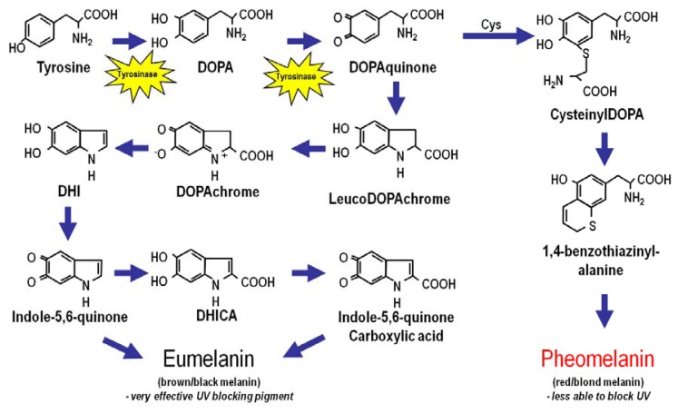

UV radiation is a carcinogen, having properties of both a tumor initiator and tumor promoter. It is the most important risk factor for skin cancer in terms of how frequently we are exposed to it and how the damage can be prevented. It is linked to the 3 most common types of skin cancer. It also contributes to skin inflammation and degenerative aging.
The effect of UV radiation on our skin cells can be understood by looking closely at how it affects specific cells. The skin is composed of two primary layers – the epidermis and the dermis. Keratinocytes are the most abundant cells in the epidermis. They accumulate melanin pigments while maturing and these pigments potently block UV penetration into the skin. One of the chemical forms of melanin (eumelanin), in particular, is efficient at blocking UV radiation.
UV energy can be divided into UV-A, UV-B and UV-C components having different wavelengths and each can affect cells in different ways. Ambient sunlight is mostly a mixture of UVA and UVB. Some consequences of UV exposure occur acutely while others occur in a delayed manner.
The most commonly observed acute effect is inflammation. UVB radiation induces a number of cytokines and neuroactive mediators that collectively result in the inflammatory response of sunburn. If UV exposure exceeds a certain threshold, keratinocytes undergo apoptosis or “programmed cell death” and are consequently known as “sunburn cells”. Another effect of UV exposure is hyperkeratosis or an increase in epidermal thickness due to increased keratinocyte cell division. This also results in tanning or adaptive melanization of the skin, in order to protect it better against UV penetration. Defects in this pathway are linked with increased susceptibility to cancer.
UV radiation also causes mutations by generating reactive oxygen species like superoxide anion and hydroxyl radical. Nucleotides in our DNA are highly susceptible to mispairing of nitrogenous bases due to oxidation, causing mutagenesis. The mutations found in skin tumors are the same as those caused by these reactive oxygen species. Apart from free radical formation, UV exposure directly affects pyrimidine base pairing in DNA. In particular, UVB and UVC cleave 5 to 6 internal double bonds and if this happens in adjacent bases (thymine-TT or cytosine-CC), it leads to the formation of abnormal covalent bonds, producing a cyclic ring structure and changing the structure of the helix. A day’s sun exposure can lead to 105 photo lesions in every skin cell, which block DNA replication and impair transcription. The melanocortin 1 receptor (M1CR) is concerned with pigmentation, tanning and skin cancer susceptibility. It protects the skin from UV radiation by inducing the production and accumulation of eumelanin and by enhancing nucleotide excision DNA repair as well as oxidative resistance.
Exposure to UVB can also risk cataract development, which causes blindness. Although UV radiation is used along with chemical drugs for the therapy of skin diseases like psoriasis and vitiligo, it has undesirable effects as well. Much UV damage can be avoided by minimizing UV exposure and taking precautions like wearing sunscreen and minimizing outdoor time from 10 am to 4 pm (peak UV hours).
https://www.ncbi.nlm.nih.gov/pmc/articles/PMC3709783/ https://pubmed.ncbi.nlm.nih.gov/15020192/ https://www.who.int/news-room/questions-and-answers/item/Radiation-effects-of-ultraviolet-(uv)-radiation-on-the-skin-eyes-and-immune-system